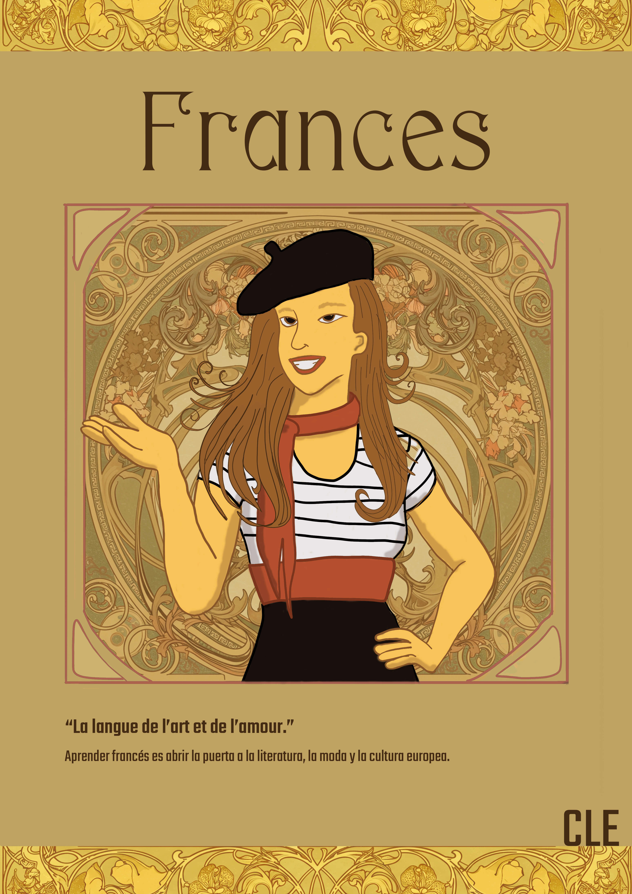
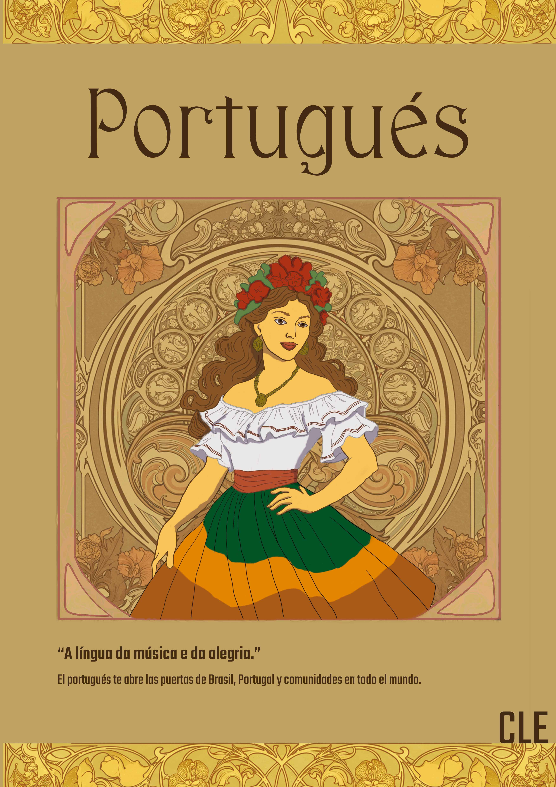
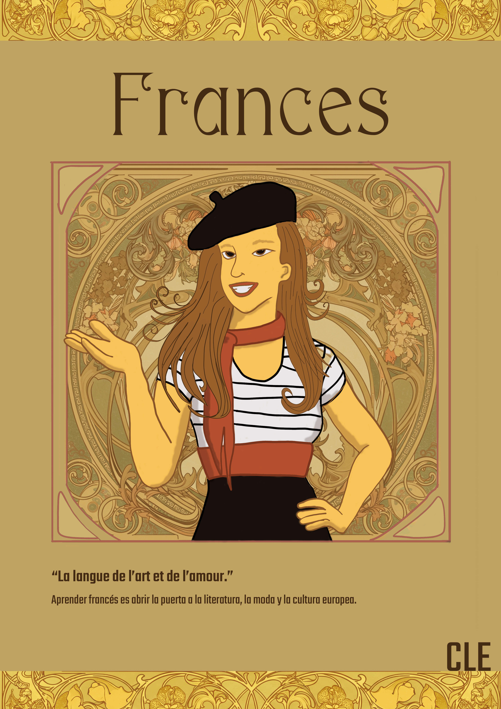
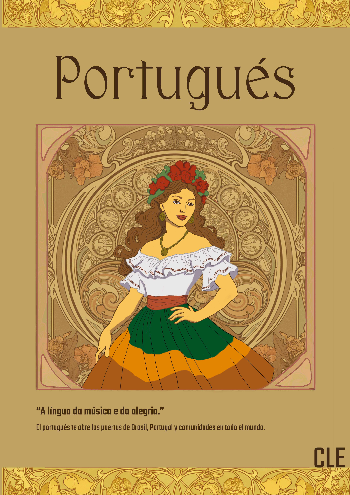

Proyecto de Afiches
Sistema visual aplicado en cuatro afiches y una infografía de Canelo Álvarez.

Concepto general del proyecto
El objetivo era desarrollar una serie de afiches para el Centro de Lenguas, utilizando un sistema visual coherente, atractivo y con una identidad gráfica sólida. Para esto, se definió un concepto unificador que permitiera relacionar los cuatro idiomas dentro de una misma propuesta estética sin perder la esencia cultural de cada uno.

Elección del estilo
Se eligió trabajar con referencias del movimiento Art Nouveau, caracterizado por:
• líneas orgánicas y curvas elegantes
• composiciones simétricas
• motivos florales y ornamentales
• paletas cálidas y armónicas
Este estilo permitió crear una estética unificada y visualmente rica, ideal para
conectar los cuatro afiches como parte de un mismo sistema gráfico.

Concepto de personaje
Cada afiche presenta una ilustración original creada específicamente para el proyecto.
Los personajes se basan en la indumentaria tradicional femenina de cada país,
reinterpretada mediante un estilo ilustrativo propio. Esto permitió:
• reforzar la identidad cultural asociada a cada idioma
• mantener coherencia visual entre todas las piezas
• lograr una composición armónica entre figura, marco y fondo Art Nouveau
Cada personaje funciona tanto como pieza individual como dentro del conjunto completo.

Uso de marcos y composición
El sistema visual final se articula mediante marcos ornamentales inspirados en el
diseño clásico del Art Nouveau. Estos marcos permiten que los afiches funcionen
individualmente, pero también que puedan unirse formando una pieza continua gracias
a la conexión entre los elementos florales y ornamentales.
A continuación se presentan los cuatro afiches completos y la infografía final del proyecto.
 



Infografía Canelo Álvarez
Análisis de su carrera y momentos clave